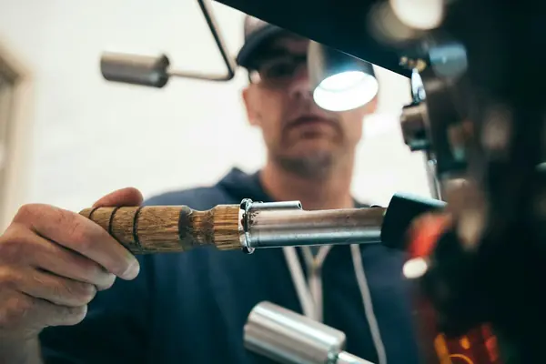

Car valeting tips & news.
Expert advice on car care, paint protection, and getting the most from your valeting sessions — from the ADZ Valeting team in Bristol.
Every article
9 articles-
 Mobile Valeting
Mobile ValetingCar Valet vs. Car Detail: What’s the Difference?
Understanding the difference between a car valet and a car detail can be crucial for your car's care. This guide breaks down each service to help you decide which your vehicle needs.
5 min readRead -
 Interior Detailing
Interior DetailingTackling Dog Hair and Muddy Paw Prints: A Guide for Bristol Dog Owners
Keeping your car interior clean as a dog owner can be a challenge. Here’s how to deal with pet hair and odours after every journey, and what a professional interior valet can do for you.
6 min readRead -
Car Care Tips
Why Dark-Coloured Cars Show Every Detail and How to Keep Them Sharp
Dark cars like black, navy, and dark grey are stunning but show every scratch, water spot, and fingerprint. Discover how to maintain their appearance between professional details in Bristol.
6 min readRead -
Interior Detailing
Banishing Damp Smells: The Importance of Interior Valeting in Autumn and Winter
Damp and musty smells in your car during the colder months can be frustrating. Discover why this happens and how a thorough interior valet can eliminate those unwanted scents for good.
6 min readRead -

Paint ProtectionWhy Bristol's Weather Is the #1 Enemy of Your Car's Paintwork
Bristol gets over 1,200mm of rain a year — well above the UK average. For anyone who takes pride in their car, that's not just a weather forecast. It's a constant, year-round attack on your paintwork.
5 min readRead -
Mobile Valeting
Mobile Car Valeting vs Drive-Through Car Wash: Which Is Better for Your Car?
Drive-through car washes are everywhere, they're cheap, and they take three minutes. Mobile car valeting takes a few hours and costs more. So why do so many Bristol drivers make the switch — and never go back?
6 min readRead -
Car Care Tips
How to Keep Your Car Looking Showroom Fresh Between Professional Valet Sessions
A professional valet doesn't last forever — it can't. Your car exists in the real world, where bird droppings, road grime, and Bristol rain work against it every day. But the right habits between sessions make a measurable difference.
7 min readRead -
Packages & Pricing
Car Valeting Packages Explained: Which One Is Right for Your Car?
Not every car needs the same treatment — and not every driver has the same goal. Choosing the right package from the start means you get exactly what your car needs without overpaying for work it doesn't require.
6 min readRead
Ready to book your detail?
Mobile valeting across Bristol and the surrounding area. We come to you — no drop-offs required.